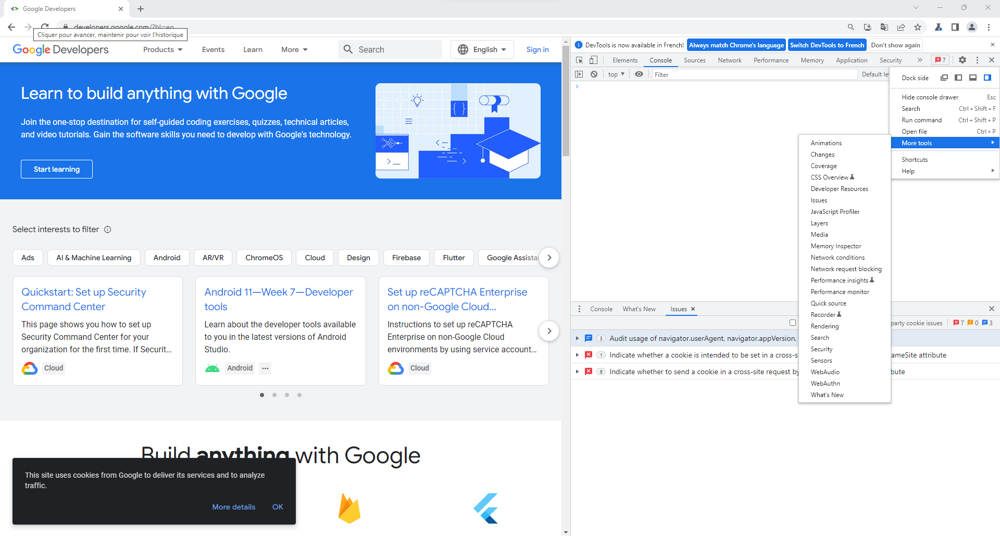
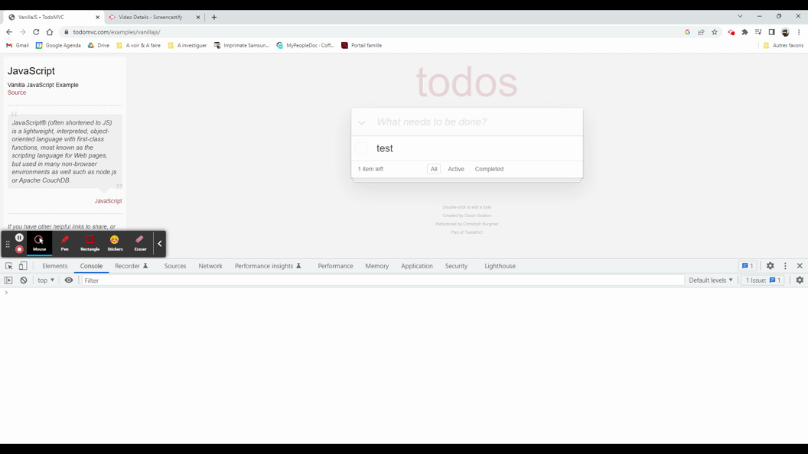
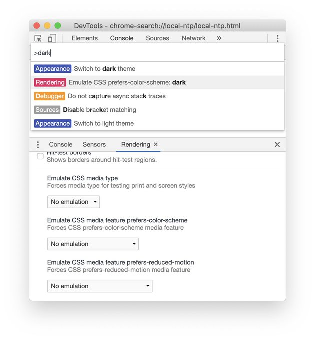

You know nothing JS
Chrome Dev Tool
Before we start, never forget this mantra
What we don’t know is usually what gets us killed.
Petyr Baelish
Goal
Discover some possibilities of the tools
Big picture
What is the Chrome DevTools?
This is the superhero tools for Web devs
- It contains debugging tools
- It contains editing tools
- It contains inspecting and profiling tools
- It contains emulating tools
We have two versions
- One is our usual Chrome browser
- One is Chrome Canary
Chrome Canary
- This is Chrome in version n+3/+4
- It enables a lot of new Web features
- It deploys new Chrome Dev Tools features
- In both cases, we could test them and bring some feedback
E.g. Chrome v107 and Chrome Canary v110
You and the Console
We have a TON of shortcuts
Really, no kidding
For DOM inspection
$0 represents the last selected dom element, $1, the previous one, etc...

For DOM inspection
$$(cssSelector[, rootElement]) will search any elements into the page

For inspection and debug
- getEventListeners(domElement) to return all attached listeners on the DOM element
- copy(var/object/fn) to copy into the clipboard the value of the variable from the console
- inspect(var/object) to open the watcher's tab within sources tab
- keys(var/object) returns an array containing the names of the properties of an object
- values(var/object) returns an array containing the values of all properties of an object
For deeper inspection
queryObjects(Constructor) to get all objects of a given constructor or class
For monitoring
monitor(function) will log a message into the console each time this is called

You and CDT's commands
Command Menu
Type Control+Shift+P (Windows / Linux) or Command+Shift+P (Mac) to see all available command.

Really, a huge list of commands

Then you could emulate prefers-color-scheme: dark...
... or emulate vision deficiencies

You and CDT's editors
We have a ton of editors
They ease the definition of some CSS properties, HTML rendering, etc...
You could edit the flexibox easily
Simply click on the flex badge into the DOM inspector

You could debug the grid easily
Simply click on the grid badge into the DOM inspector

We could find a built-in shadow editor

We could find a built-in transition effect editor
We have a Web component inspector

Advanced
Save your usual scripts in Snippets

Alarm api
To execute periodically some code
const delayInMinutes = 5;
const periodInMinutes = 2;
chrome.alarms.create("my-periodic-alarm", { delayInMinutes, periodInMinutes });
chrome.alarms.onAlarm.addListener((alarmName) => {
alarmName == 'my-periodic-alarm' && executeSomeCode()
});
Record, replay and inspect user flow

Hold Shift and see related resources on your network

Use performance monitor so detect leaks in real time